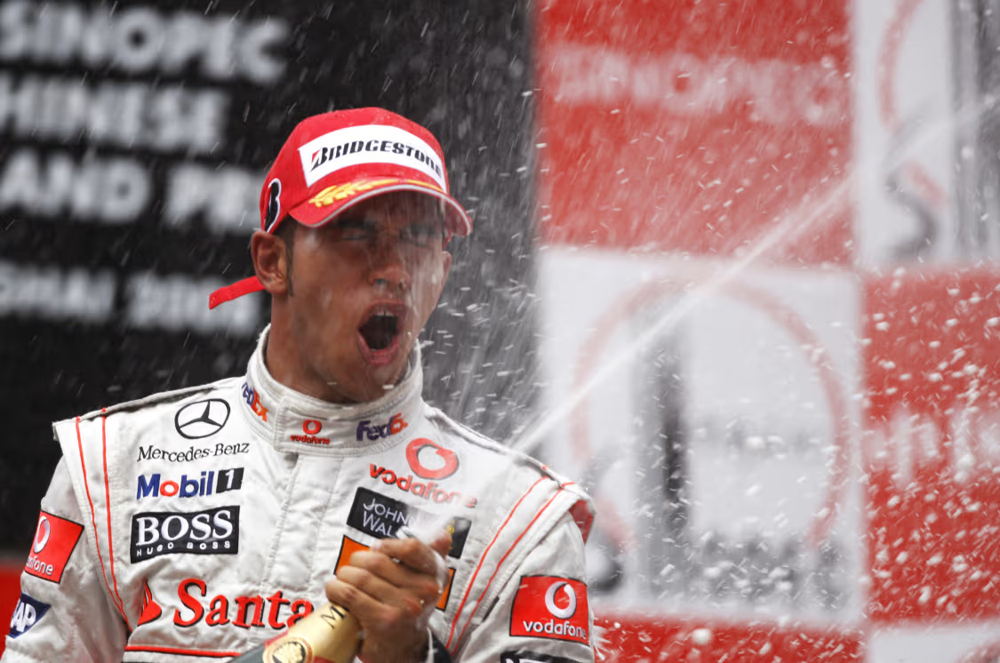

Lewis Hamilton - 2008, 2014, 2015, 2017-2020
The 30th Formula 1 World Champion was the youngest ever, taking his first title in the most dramatic fashion - on the last corner of the last lap of the last race of one of the most scintillating seasons. The sensational triumph of the sport's first black driver, in only his second year at the pinnacle of motorsport, was a welcome human interest story that focused unprecedented international attention on Formula 1 racing. His prodigious talent and pleasing personality made Lewis Hamilton an inspirational role model and ideal ambassador for his profession...
Lewis Hamilton is a British Formula 1 racing driver who has cemented his place as one of the greatest in the history of the sport. Born on January 7, 1985, in Stevenage, Hertfordshire, Hamilton's journey to Formula 1 began at a young age when he started karting. His prodigious talent quickly became evident, and by the age of 10, he had already won the British Karting Championship. His success in karting led to a meeting with McLaren team principal Ron Dennis, who famously told Hamilton that he would sign him to the McLaren team one day. True to his word, Dennis brought Hamilton into the McLaren Young Driver Programme in 1998, setting the stage for one of the most remarkable careers in motorsport history.
Hamilton made his Formula 1 debut with McLaren in 2007, and his impact was immediate. In his rookie season, he finished on the podium in his first nine races, including his debut at the Australian Grand Prix. He went on to win four races that season and narrowly missed out on the World Championship, finishing just one point behind Kimi Räikkönen. Hamilton's rookie season remains one of the most impressive in Formula 1 history, and it was clear that he was a future champion in the making.
The following year, in 2008, Hamilton became the youngest Formula 1 World Champion at the time, securing the title in dramatic fashion. His victory at the Brazilian Grand Prix, where he overtook Timo Glock on the last corner of the last lap to secure the fifth-place finish he needed, is one of the most iconic moments in the sport's history. This triumph marked the beginning of Hamilton's rise to prominence, as he became not only a successful driver but also a global icon, known for breaking barriers as the first black driver in Formula 1.
In 2013, Hamilton made a pivotal career move by joining Mercedes-AMG Petronas Formula One Team, a decision that would propel him to new heights. Under the guidance of team principal Toto Wolff and alongside teammate Nico Rosberg, Hamilton thrived in the new turbo-hybrid era of Formula 1 that began in 2014. He won his second World Championship that year, followed by a third title in 2015. The intense rivalry with Rosberg, especially during the 2016 season, was one of the defining narratives of the era, with Hamilton narrowly missing out on the championship to Rosberg in 2016.
Following Rosberg's retirement at the end of 2016, Hamilton faced new challenges from Ferrari's Sebastian Vettel and later Red Bull Racing's Max Verstappen. Despite the stiff competition, Hamilton continued to dominate the sport, winning four consecutive World Championships from 2017 to 2020. His ability to consistently perform at the highest level, adapt to different racing conditions, and maintain a high level of focus and determination has been key to his sustained success.
In 2020, Hamilton equaled Michael Schumacher's record of seven World Drivers' Championships, solidifying his place among the sport's all-time greats. That year, he also broke Schumacher's long-standing record for the most race wins, further establishing his dominance in Formula 1. Hamilton's success has not been limited to his on-track achievements; he has also been a vocal advocate for social justice, diversity, and environmental sustainability. His activism has earned him widespread respect and recognition, both within and outside the racing community.
Hamilton's influence extends beyond the racetrack. He has used his platform to advocate for racial equality, founding The Hamilton Commission in 2020 to increase diversity in motorsport. He has also been involved in various charitable initiatives and has been a leading voice in the push for environmental sustainability in Formula 1. His dedication to these causes, combined with his success on the track, has made him a role model for millions around the world.
As of 2024, Lewis Hamilton remains a competitive force in Formula 1, racing for Mercedes. His legacy is defined not only by his record-breaking achievements and numerous championships but also by his impact on the sport as a whole. Hamilton has inspired a new generation of drivers and fans, and his influence continues to shape the future of Formula 1. Whether or not he adds more titles to his already impressive resume, Hamilton's place in the annals of motorsport history is secure, as a driver who redefined the limits of what is possible both on and off the track.